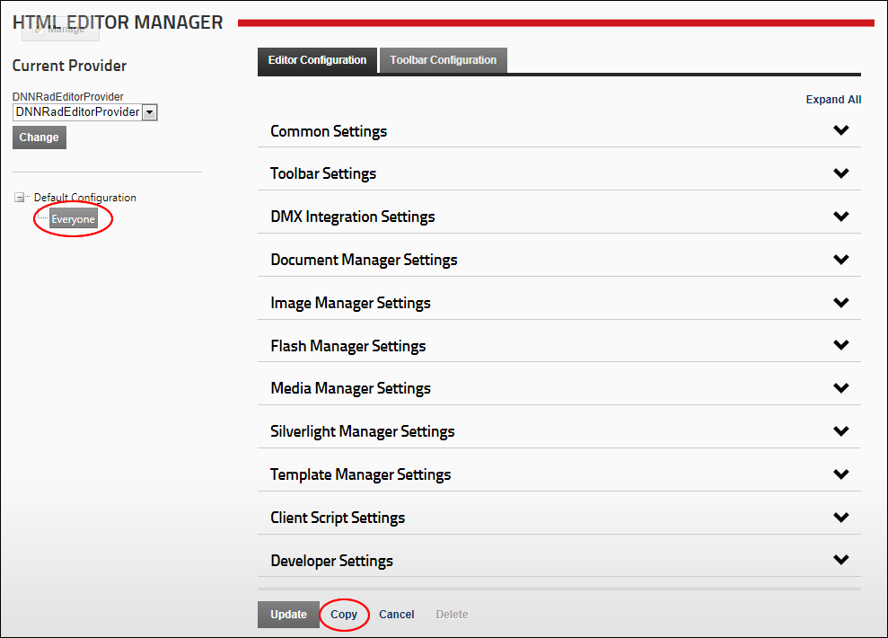
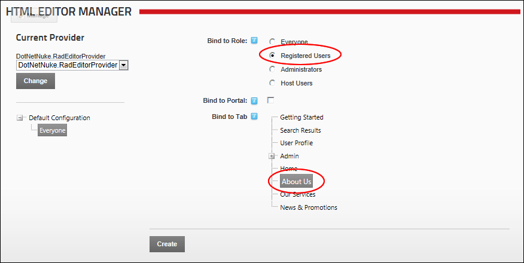
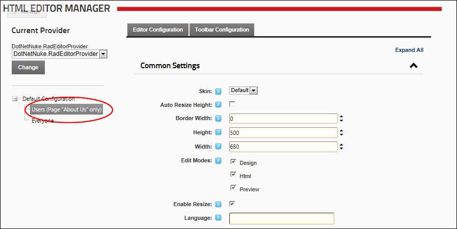

Adding New Editor Configurations
How to create different configurations for the DotNetNuke.RadEditorProvider for registered users, Administrators and SuperUsers. These configurations can be applied to a single page on the current site, all pages of the current site, or all pages of all sites within this installation.
- Optional. To create a configuration that is unique to a single site, navigate to the required site. See "Overview of the ControlBar Control Panel" or See "Overview of the RibbonBar Control Panel"
- Navigate to Host >
 HTML Editor Manager.
HTML Editor Manager.
- In the left hand navigation tree, select the configuration that you want to base this new configuration on. E.g. Everyone (as selected in the below image). This displays the Editor Configuration tab to the right.
- Click the Copy button.

- At Bind To Role, select the role for this configuration. Options include Everyone, Registered Users, Administrators, and Host Users. Registered Users is selected in the below image.
- Set the availability of this new configuration from these options:
- At Bind To Portal, to if this configuration is available to all pages of the current site only - OR - to associate this configuration with all sites within this installation.
- At Bind To Tab, select the single page that this configuration is associated with from the tree folder list of site pages. In the below image, the "About Us" page is selected.

- Click the Create link.
- The new configuration is now displayed in navigation tree to the right. E.g. Users (Page "About Us" only)

- Optional. Modify one or more settings to customize this configuration.
-